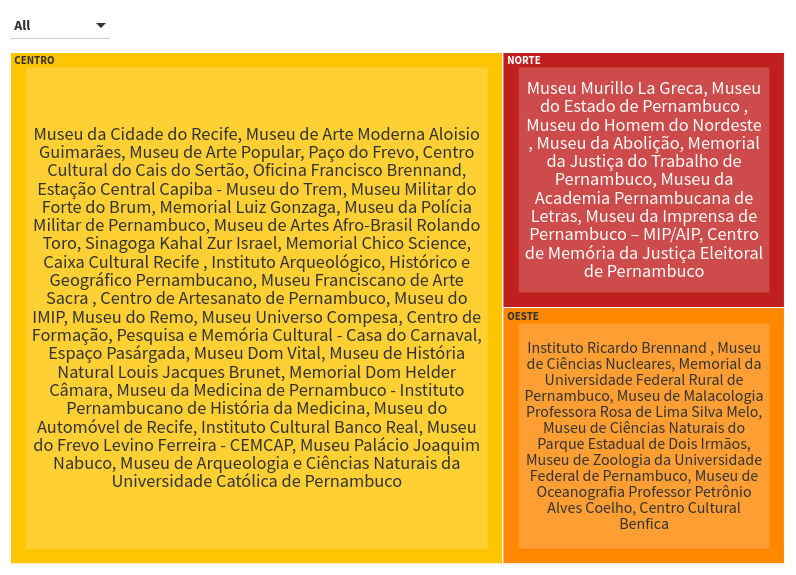

‘Só conseguimos lembrar do que temos contato’: um retrato do esquecimento dos museus do Recife

Um museu a céu aberto. Assim, Vilmar Victor, historiador pela Universidade de Pernambuco (UPE) e mestre em psicologia pela Universidade Federal de Pernambuco (UFPE), define o Recife. E, para além das ruas e pontes que contam histórias, a cidade ainda tem mais de 50 museus, que atuam como relato de memória e contribuem para a geração de um senso crítico para a prosperidade e de preservação da história e cultura de determinado local.
Para Gilvanildo Ferreira, museólogo e mestre em antropologia pela UFPE, os museus englobam a variedade humana e seu fenômenos sociais para rememorar a história: “São equipamentos culturais acessíveis e inclusivos que promovem a diversidade e sustentabilidade em todas as esferas, idealizam a consolidação das redes, discussões e, principalmente, propostas que favorecem a ampliação da presença socialmente digna dos grupos humanos em seus modos de habitar em um mundo globalizado e neoliberal“.
Apesar da relevância histórico-cultural, os locais padecem com o baixo investimento estatal. Por isso, Vilmar recorda o incêndio ao Museu Nacional, em 2018, no Rio de Janeiro, como uma "tragédia anunciada". No lamentável episódio, o fóssil mais antigo das Américas – Luzia, com idade estimada em 11.500 anos – foi um dos milhares de acervos que virou cinzas no edifício de 200 anos. Contudo, como defende o historiador, isso segue apenas a política adotada pelo regime para os museus: o esquecimento.
"Só conseguimos lembrar do que temos contato. Então, há dois caminhos a serem seguidos: o de memória e de esquecimento. Infelizmente, o Governo Brasileiro adotou o segundo", diz.
Isso, naturalmente, tem como resultado o pouco estímulo da população para frequentar os museus. Questionado sobre a importância do contato com os museus na formação de um indivíduo, Gilvanildo aponta que são espaços de aprendizado e fazem parte de um papel importante de educacional e cultural - “esses processos extrapolam os limites físicos e palpáveis dos museus e dos territórios, estendendo-se para as vivências e o cotidiano dos grupos humanos” complementa.
O museólogo é o idealizador do projeto ‘Museus em número’, que busca mapear a realidade museal do Recife, sobretudo pela carência de dados nas duas principais plataformas de consulta: Cadastro Nacional de Museus (CNM), do Instituto Brasileiro dos Museus (Ibram) e o Mapa Cultural Pernambuco (MCPE) do Governo do estado de Pernambuco. Assim, esclarece que “o projeto foi pensado como forma de suprimir esta lacuna e produzir parâmetros apropriados para dialogar com a realidade e recomendar novos caminhos aos museus recifenses”.
No Recife, por exemplo, os museus estão predominantemente concentrados no Centro, enquanto a minoria se divide entre as zonas Norte e Oeste. A centralização, aliás, reflete também no investimento, conforme pontua Vilmar: "A Prefeitura até investe nos museus mais atrativos que fazem parte do Centro da cidade, para atrair turistas, mas o restante se torna esquecido". Vale destacar que, segundo dados do Ibram, a esfera municipal é a principal provedora dos museus do país.
Mapeamento dos museus recifenses
Fonte: Museusbr.gov
Dado o cenário de carência desde recursos financeiros até os técnicos e humanos, Gilvanildo reforça a importância de políticas públicas de valorização para o funcionamento pleno desses bens culturais. “É necessário fortalecer o universo dos museus no município do Recife e seus órgãos de salvaguarda. Isto é mobilizar de forma potente e organizada os aspectos de produção e participação dos museus e agentes do Recife, como também fortalecer os laços entre os museus e a sociedade, ampliando o público que frequenta esses espaços”, conclui.